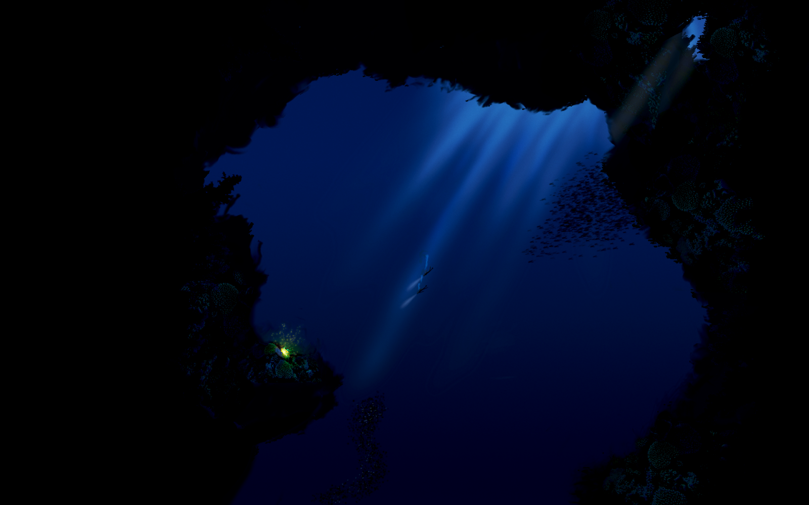

Fatos sobre o Stomatopoda
Classificação científica
Seu nome científico é Odontodactylus scyllarus.
| Reino | Filo | Subfilo | Classe | Subclasse | Ordem |
|---|---|---|---|---|---|
| Animalia | Arthropoda | Crustacea | Malacostraca | Hoplocarida | Stomatopoda |
Como a Stomatopoda enxergam o mundo

Esses animais possuem o mais complexo sistema de visão de cores do mundo animal, pois enxergam 12 cores primárias, correspondentes aos 12 pigmentos distintos presentes em sua retina.
Habitat
Os estomatópodes compõe uma ordem de crustáceos marinhos criptobentônicos que habitam águas tropicais e subtropicais. Eles vivem em fundo consolidado, lodoso ou ainda arenoso, onde cavam seus buracos ou aproveitam-se dos orifícios deixados por outros animais para neles se instalar.
Alimentação
São animais exclusivamente carnívoros, alimentando-se de camarões, caranguejos, moluscos, peixes e até mesmo outros da mesma ordem.
Referências bibliograficas
Stomatopoda. Wikipédia, 2021. Disponível em: https://pt.wikipedia.org/wiki/Stomatopoda. Acesso em: 27, julho e 2021.